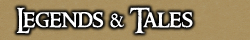
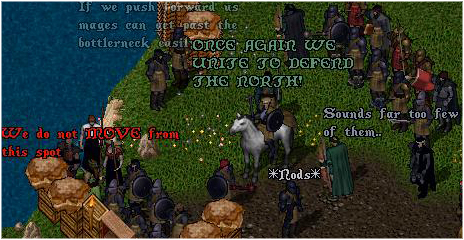

<TABLE BORDER CELLPADDING="0" background="bocimages/scrollbgdark.gif" width="100%">
	<TR>
	<!-- Header or whatever -->
	<BR>
		<TD valign="top" class="notes">
		The Baronship of Cove plays host to a magnificent
	      culture, filled with glorious tellings of adventure and mystery. These Legends
	      and Tales are set aside for the reading. Might thy mind be intrigued.<BR>
	      <BR>
	      <B><U>Legends</U></B><BR>
	      <B><I>Baron Octivous</I></B> - The Baron was born from an old family within
	      Cove, and was appointed to rule by the Baron Twothumb himself. He controls
	      through a combination of fear and propaganda, and has big plans for Cove.
	      He is a tough man and is able to defend himself well, contrary to the many
	      stereotypical nobles and wealthy citizens that live in the nearby area. The
	      Baron shares a close friendship with his advisor, Daelin.
	      <P>
	      <B><I>Daelin (Missing) </I></B>- Daelin is the Baron's advisor, but he is
	      not all he seems to be; rumours are that it was he who murdered the Baron's
	      father. He carries an aura of Evil around with him, and it will almost certainly
	      become apparent soon what role he shall play in the story of Cove.
	      <P>
	      <B><I>Gregor Eason </I></B>- Former Commander of the armed forces of the
	      Baronship, the Cove Militia (now the Covian Army), Gregor Eason heralded
	      from a military and educated background. During the Orc Campaign, he showed
	      a considerable zeal toward defeating the unwelcome occupants of Cove, and
	      saw through many conflicts with the Militia across Trinsic, Vesper, and
	      Yew.<BR>
	      Having endured a hard career, Eason was set to retire. However, following
	      an accusation made by the Guardsmen Militia that Eason had been involved
	      in the Yew Rebellion of recent days, the former Commander went underground
	      - faking his own death and disappearing for a number of months.
	      <DIV align="center">
		<BR>
		<I><SMALL>Former Commander Gregor Eason unites the North, prior to his
		downfall.</SMALL></I>
	      </DIV>
	      <P>
	      He returned to find the Baronship in a state of disrepair, as Baron Octiovus,
	      along with a number of prominent Covians, had deserted Cove. It was during
	      this time Eason took his place again as Commander, and, with the help of
	      the remaining Covian people, saw the spirit of the Baronship rekindled. New
	      Allies were made, as well as Enemies.<BR>
	      Yet the Officer nay lingered. A vicious conflict with the Yew Militia to
	      the West saw an unforgiving defeat set upon the Cove Militia, with Commander
	      Gregor Eason at its helm. Many Covian lives were lost, and blaming himself
	      for the fatal loss.. Eason resigned the Baron's Commission, and retired into
	      the forests; only to return when he was needed once more.
	      <P>
	      <B><I>The Black Wizard</I></B> - No one knows the origin or details of "The
	      Black Wizard" for certain. The peasants tell their children that he is a
	      wytch that shall take them away and cook them in a cauldron if they do not
	      behave. The scholars of Cove seem to believe he is either some sort of spirit
	      or even daemon that plagues the Covian outskirts.<BR>
	      Whatever he is, his legend has remained in the hearts of locals for many
	      an age, causing fright in them as they walk through the darkened woods of
	      Cove. The Militia Command seems to believe he is somehow affiliated with
	      the Bloodeye Orc Tribe, for he is mentioned by them as a diety of worship...
	      <P>
	      <B><I>Hrothgar De'Mar (Deceased) </I></B>- The veteran of veterans, former
	      Captain Hrothgar De'Mar had served longer then any man, woman or half-breed
	      ever recorded in the Covian Army. Serving three separate rulers and watching
	      Cove grow from a poor tradeport into a flourishing empire, Hrothgar took
	      on any challenge with what some called bravery, but others labelled pure
	      madness. <BR>
	      The old man had gained several friends and family over his years but his
	      list of enemies was even longer, holding behind his back a long background
	      of torturing and killing; therefore earning him quite alot of people who
	      wanted him harm. <BR>
	      Despite some of his cruel acts over the years, Hrothgar was also famed for
	      good things such as personally training his soldiers one on one; his apprentices
	      being known to reach Sergeant positions, and even Commander. Hrothgar was
	      also known as the Baron's first bodyguard, the founder and First Grenadier
	      of the Baron's Own Grenadiers. <BR>
	      Hrothgar De'Mar was tragically murdered on a routine patrol in the Cove Docks
	      district.
	      <P>
	      <B><U>Tales</U></B><A HREF="JavaScript:tale_window('tales/trialahmed.html')"><BR>
	      <FONT COLOR="#DFE1E2"><I>Recruit's Trial: Ahmed Al Maktoum</I></FONT></A>,
	      written by Guardsman Recruit
	      Maktoum<A HREF="JavaScript:tale_window('tales/spirits.html')"><BR>
	      <FONT COLOR="#DFE1E2"><I>Report: Spirits In The Ice</I></FONT></A>, written
	      by Junior Guardsman&nbsp;Ryan Greystone<BR>
	      <A href="JavaScript:tale_window('tales/rum.html')"><FONT COLOR="#DFE1E2"><I>Report:
	      Smuggled Rum</I></FONT></A>, written by Junior Guardsman Nashiem De'Monti<BR>
	      <A href="JavaScript:tale_window('tales/historychurch.html')"><FONT COLOR="#DFE1E2"><I>The
	      Covian Church: A History</I></FONT></A>, written by Baron Octiovus<BR>
	      <A href="JavaScript:tale_window('tales/ale.html')"><FONT COLOR="#DFE1E2"><I>Report:
	      The Successful Ale Delivery</I></FONT></A>, written by Commander Eason<BR>
	      <A href="JavaScript:tale_window('tales/drowcove.html')"><FONT COLOR="#DFE1E2"><I>Drow
	      Attack Cove!</I></FONT></A>, written by Knight Errant Mhoram, Knights
	      Hospitallers<BR>
	      <A href="JavaScript:tale_window('tales/historycap.html')"><FONT COLOR="#DFE1E2"><I>The
	      Legend Of The Covian Cap</I></FONT></A>, written by Corporal Althalus
	      <P>
		</TD>
	</TR>
</TABLE>
